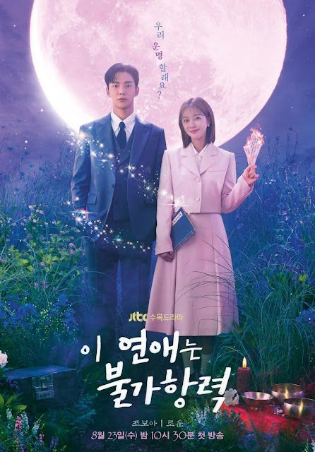
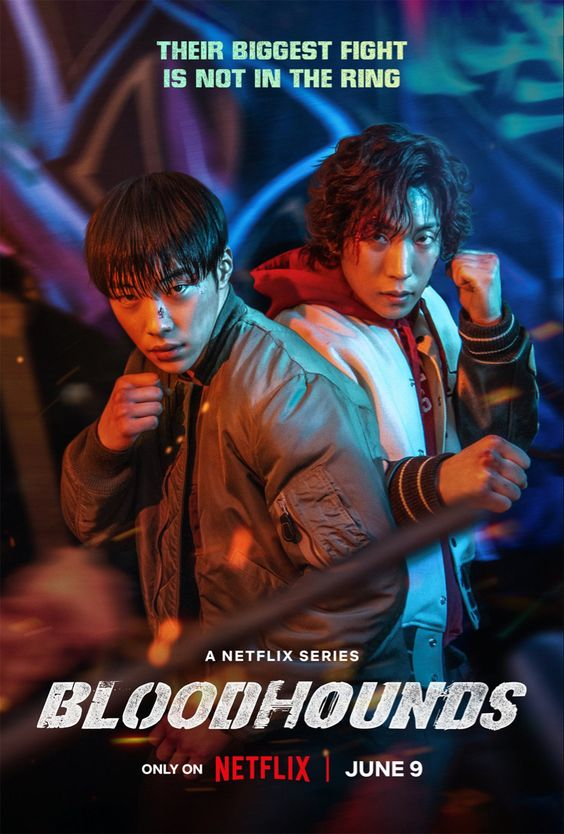

Los mejores K-Dramas de la temporada
Los dramas coreanos de esta temporada vienen mas fuertes que nunca desde romance hasta ciencia ficcion y
un poco de terror a continuacion se muestra una lista de los k-dramas mas actuales:
Amor predestinado
Un K-drama de romance y ciencia ficcion de este verano 2023,
presione la imagen para ver más

Sabuesos
Un K-drama de acción y suspenso de este verano 2023,
presione la imagen para ver más
